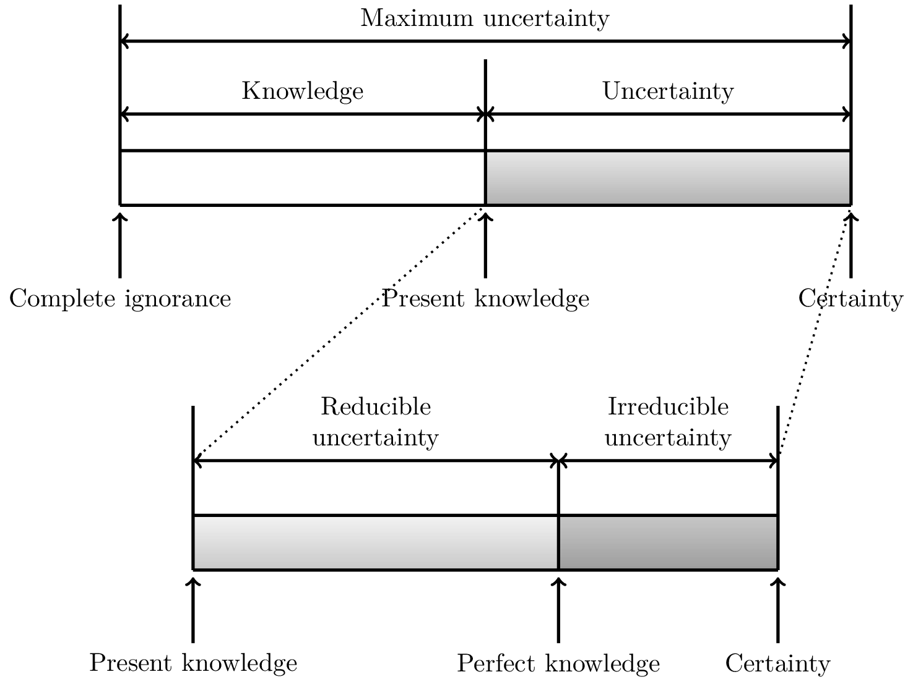

Introduction
Uncertainty
The definition of uncertainty follows from the absence of certainty describing a state of absolute knowledge where everything there is to know about a process is known [1]. This however is a theoretical and unachievable state in which deterministic models would be sufficient for the analysis of engineering systems. In reality, there is always a gap between certainty and the current state of knowledge resulting in uncertainty.
|  |
|---|
| Characterization of reducible and irreducible uncertainties. Adapted from [2]. |
Although a topic of ongoing debate and revision [2], it is largely accepted that uncertainty can be broadly classified into two types, aleatory and epistemic uncertainty [3]. The first type, aleatory uncertainties, are also called irreducible uncertainties or variability and describe the inherent randomness of a process. This could, for example, be variability in material properties, degradation of components, or varying external forces such as wind loads or earthquakes. Some researchers debate the existence of aleatory uncertainty under the assumption that if a process was fully understood it would no longer be random. Epistemic uncertainty is the uncertainty resulting from a lack of knowledge or vagueness and is also called reducible uncertainty, as it can be reduced through the collection of additional data and information. If both types of uncertainties occur together this is sometimes called hybrid or mixed uncertainty, and can be modelled using imprecise probability.
We follow Bi et al. [4] in dividing uncertainties into four categories: - Category I: Constant parameters without any associated uncertainty, - Category II: Parameters only subject to epistemic uncertainty represented as intervals, - Category III: Variables with only aleatory uncertainties, fully described by probability distributions, - Category IV: Variables subject to both aleatory and epistemic uncertainty represented using imprecise probabilities, for example using probability boxes.
Next follows a brief introduction to the modelling of precise (category III) and imprecise probabilities (category IV).
A continuous random variable $X$ is uniquely defined by its cumulative density function (CDF) $F: \mathbb{R} \rightarrow [0,1]$. By definition, it returns the probability that the random variable will take a value less than or equal to $x$
\[ F_X(x) = P_X(X \leq x).\]
A CDF is a right continuous and monotonically non-decreasing function which satisfies
\[ \lim_{x\rightarrow -\infty} F_X(x) = 0\]
and
\[ \lim_{x\rightarrow \infty} F_X(x) = 1.\]
The probability density function (PDF) of a random variable can be obtained as the derivative of the CDF
\[ f_X(x) = \frac{dF_X(x)}{dx},\]
if it exists. Conversely, the CDF can be defined as the integral of the PDF as
\[ F_X(x) = \int_{-\infty}^x f_X(\lambda) d\lambda.\]
Using the PDF and CDF random variables subject to aleatory uncertainty can be described using well established probability theory.
Ferson et al. [5] introduced the notion of a probability box (p-box) for the representing variables witg both epistemic and aleatory uncertainty. Consider two CDFs $\underline{F}$ and $\overline{F}$ with $\underline{F}(x) \leq \overline{F}(x)$ for all $x \in \mathbb{R} $. Then, $[\underline{F}(x), \overline{F}(x)]$ is the set of CDFs $F$ such that $\underline{F}(x) \leq F(x) \leq \overline{F}(x)$. This set is called the p-box for an imprecisely known random variable $X$, where $\underline{F}(x)$ is the lower bound for the probability that $X$ is smaller than or equal to $x$, and $\overline{F}(x)$ is the upper bound of this probability.
The simplest way to construct a p-box is using a known parametric family (normal, exponential, ...) with intervals for their parameters (mean, variance, ...), and from this we can form the set $[\underline{F}(x), \overline{F}(x)]$. This is known as parametric p-box, only containing distributions following the specified distribution family. If no family information is available, but $[\underline{F}(x), \overline{F}(x)]$ are known, called a distribution-free p-box, where every possible CDF between the bounds is a valid random variable.
Special algorithms must be used to propagate the epistemic uncertainty through models. As a result, the analysis also returns upper and lower bounds. This propagation of the epistemic uncertainty comes with a significant increase in computational demand, requiring specialised algorithms or perhaps surrogate modelling.
In UncertaintyQuantification.jl the four categories of uncertainties are described using the following objects:
- Category I:
Parameter - Category II:
Interval - Category III:
RandomVariable - Category IV:
ProbabilityBox.